Volksschule · Sek II · Tertiär
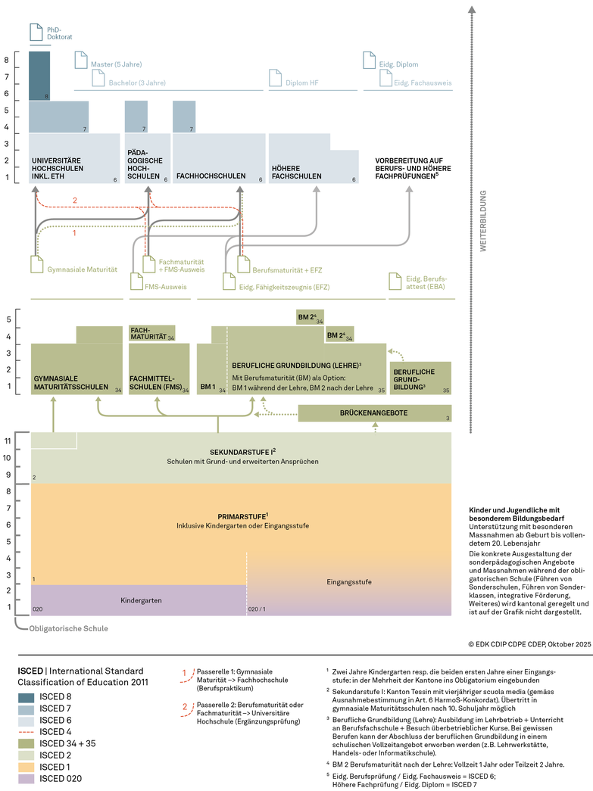
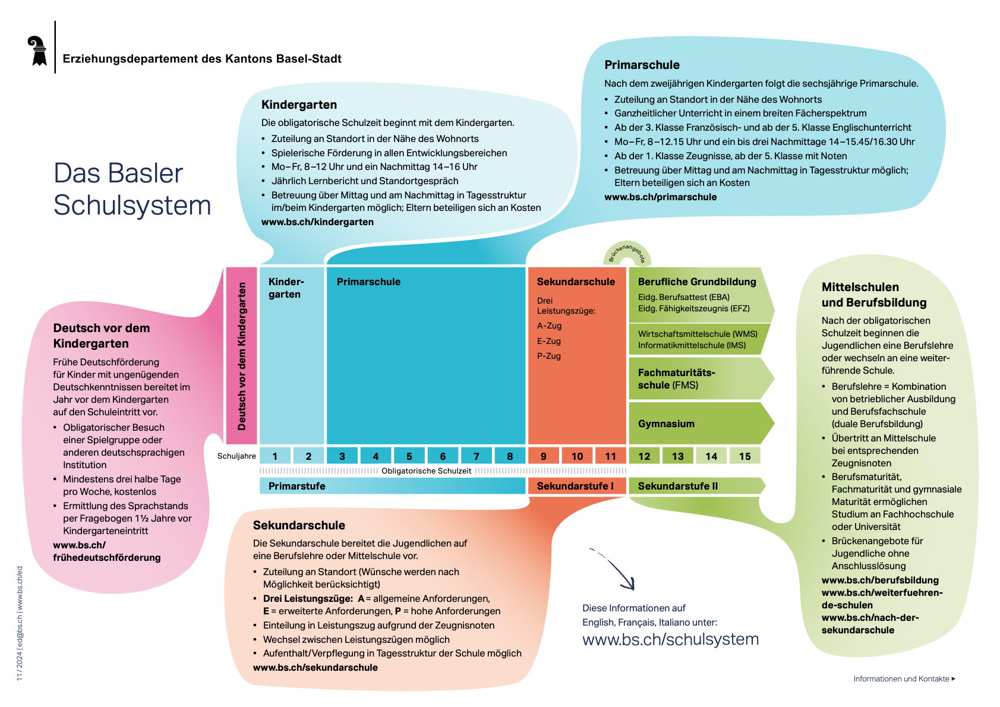
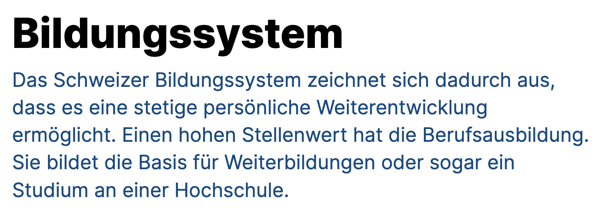
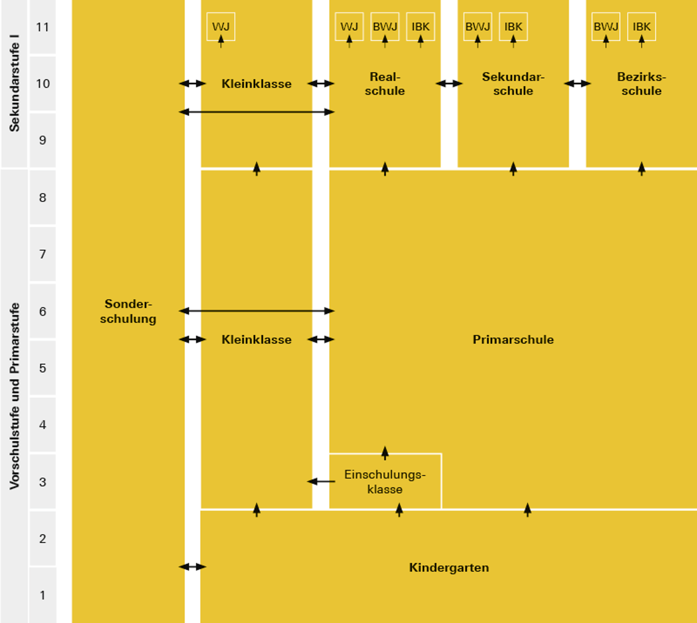
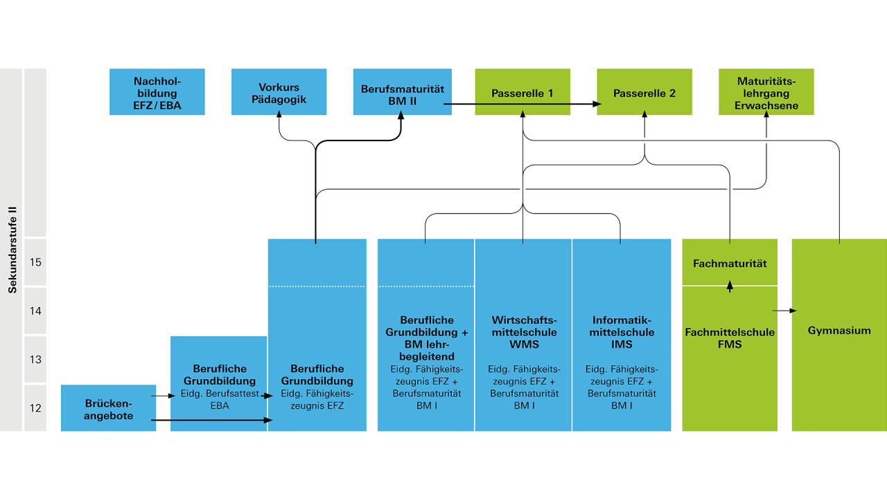
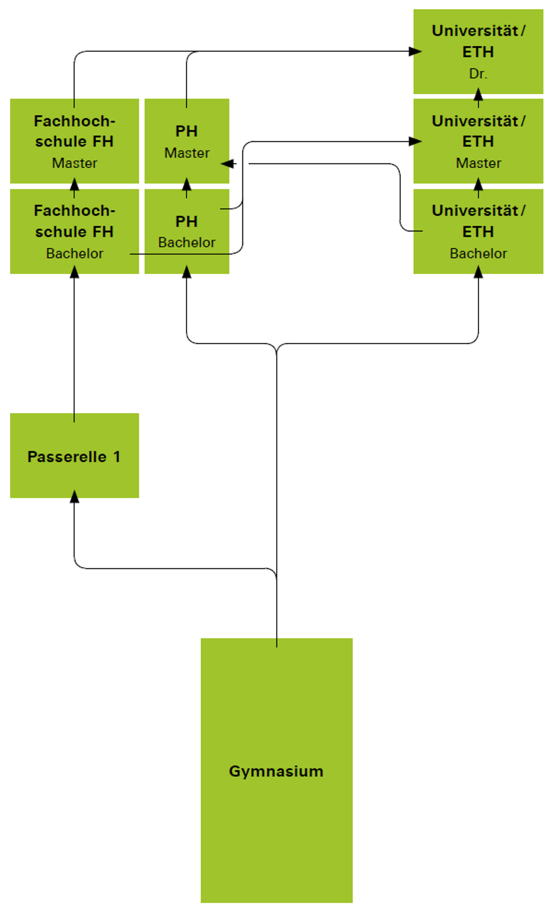
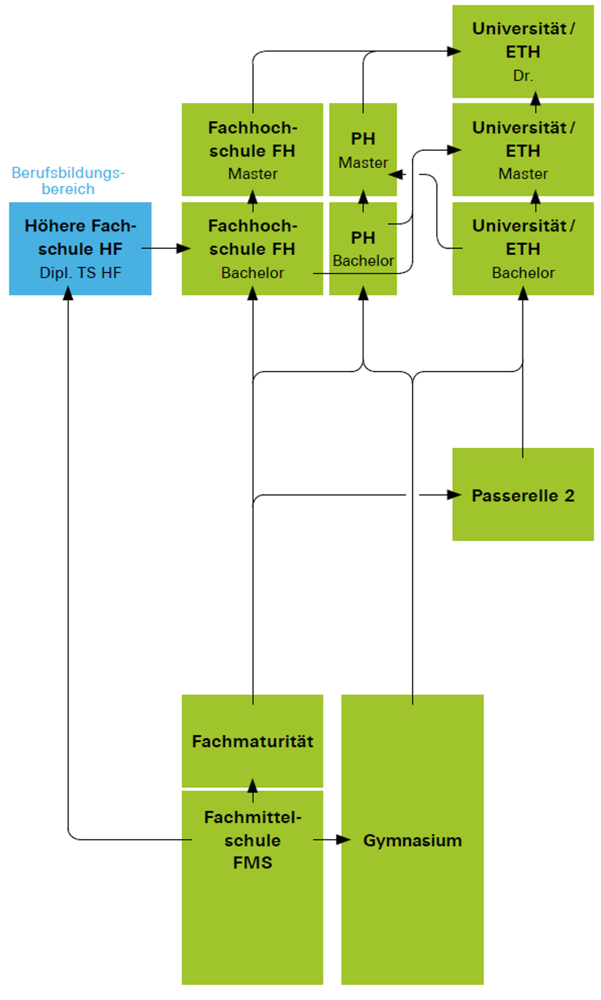
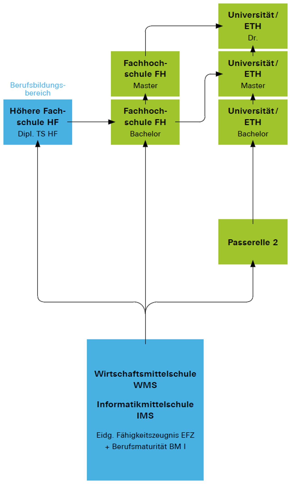
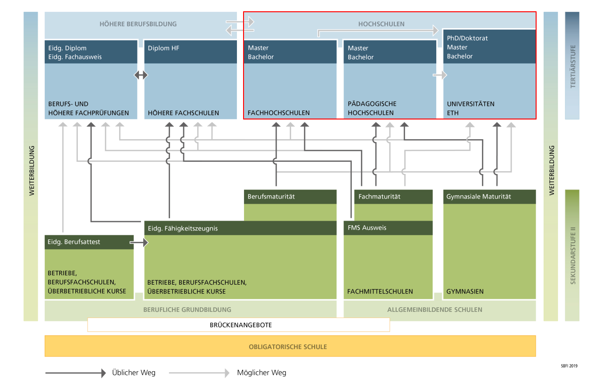
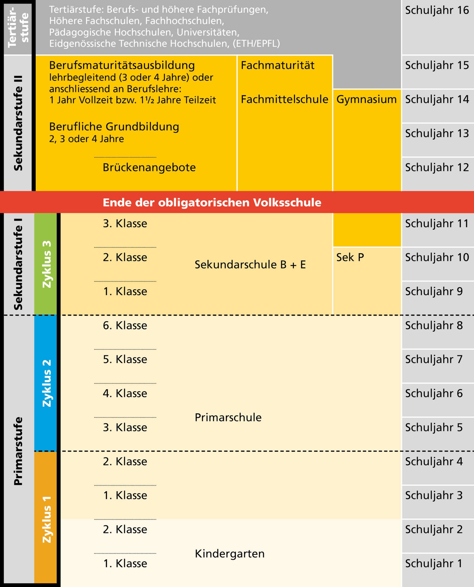
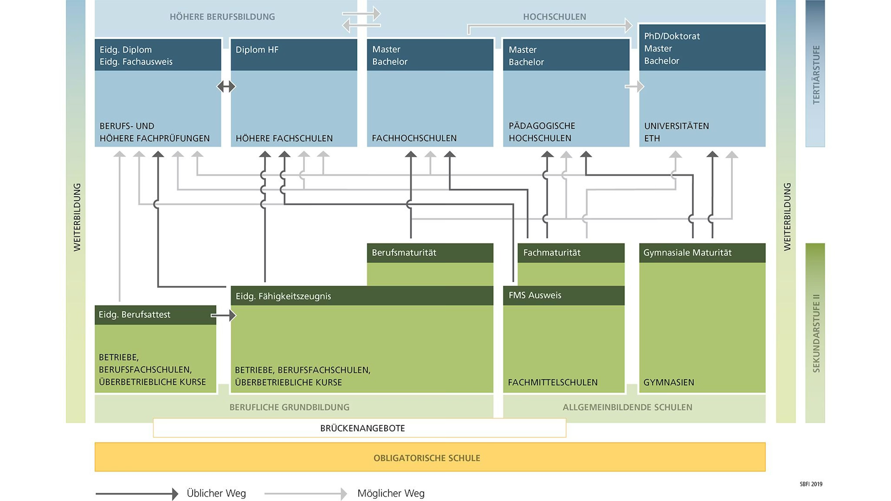
| Tertiär A – Hochschulen | Tertiär B – Höhere Berufsbildung |
|---|---|
| ETH Universitäten Fachhochschulen Pädagogische Hochschulen |
Höhere Fachschulen (HF) Weiterbildungsanbieter Prüfung |
| Doktorat Master Bachelor |
Höhere Fachprüfung (HFP) -> Eidg. Diplom, Professional Master Berufsprüfung (BP) -> Eidg. Fachausweis Professional Bachelor Dipl. … HF, Professional Bachelor |
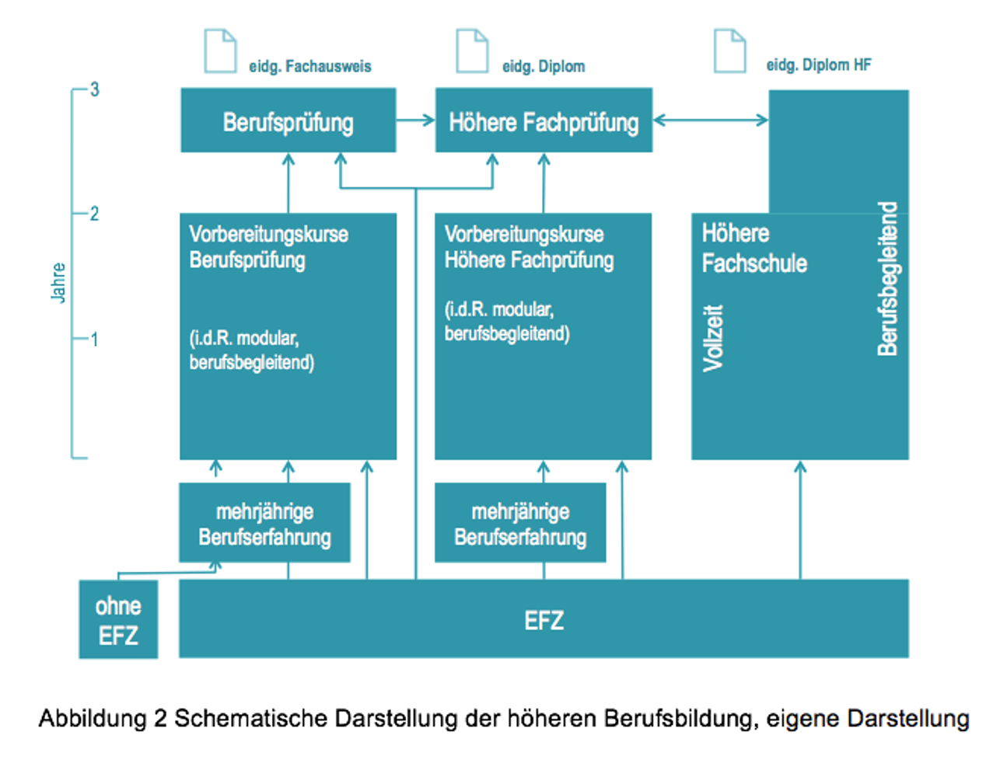
Nägele, C., & Bierschenk, K. (2014). Höhere Berufsbildung im Bildungsraum Nordwestschweiz [Higher vocational education and training in the education area of Northwestern Switzerland]. Pädagogische Hochschule FHNW, Institut Forschung und Entwicklung, Zentrum Lernen und Sozialisation.
Art. 63 Berufsbildung
1 Der Bund erlässt Vorschriften über die Berufsbildung.
2 Er fördert ein breites und durchlässiges Angebot im Bereich der Berufsbildung.
Angenommen in der Volksabstimmung vom 21. Mai 2006, in Kraft seit 21. Mai 2006.
Art. 1 Grundsatz
Die Berufsbildung ist eine gemeinsame Aufgabe von Bund, Kantonen und Organisationen der Arbeitswelt. Sie streben ein genügendes Angebot im Bereich der Berufsbildung, insbesondere in zukunftsfähigen Berufsfeldern, an.
Art. 1 Zusammenarbeit
Die Zusammenarbeit von Bund, Kantonen und Organisationen der Arbeitswelt in der Berufsbildung dient einer hohen, landesweit vergleichbaren und arbeitsmarktbezogenen Qualifikation der Lernenden.
Der Bund nimmt eine strategische Rolle ein. Er ist insbesondere zuständig für Qualitätssicherung, Weiterentwicklung, Transparenz und Vergleichbarkeit der Angebote.
Die Kantone sind verantwortlich für die Umsetzung der Berufsbildung und die Aufsicht über Lehrverhältnisse, Berufsfachschulen und Höhere Fachschulen. Zudem bieten sie Berufs-, Studien- und Laufbahnberatung an.
Die Organisationen der Arbeitswelt gestalten die Berufsbildung strategisch, konzeptionell und inhaltlich mit. Sie legen Bildungsinhalte fest und orientieren diese am künftigen Bedarf des Arbeitsmarkts.
Das Staatssekretariat für Bildung, Forschung und Innovation (SBFI) ist das Kompetenzzentrum des Bundes für national und international ausgerichtete Fragen der Bildungs-, Forschungs- und Innovationspolitik.
SBFI. (2023). Das SBFI auf einen Blick. SBFI Staatssekretariat für Bildung, Forschung und Innovation.
Die Konferenz der kantonalen Erziehungsdirektorinnen und -direktoren (EDK) unterstützt die koordinierte Umsetzung und Weiterentwicklung der Berufsbildung sowie der Berufs-, Studien- und Laufbahnberatung.
Bildungsinhalte und Ausbildungsplätze
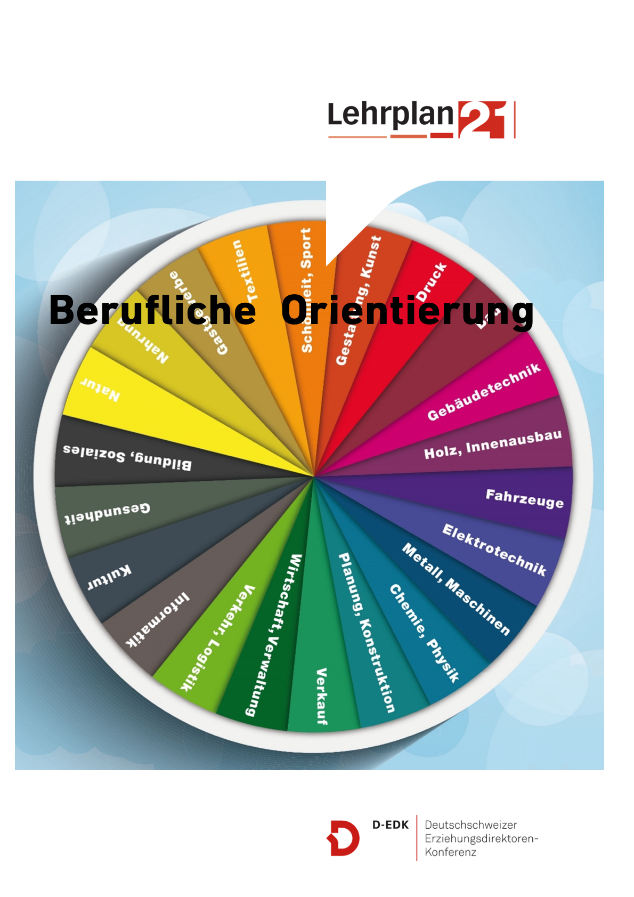
D-EDK. (2016). Lehrplan 21: Gesamtausgabe [Curriculum 21: Complete edition]. Deutschschweizer Erziehungsdirektoren-Konferenz D-EDK.
D-EDK. (2016). Lehrplan 21: Gesamtausgabe [Curriculum 21: Complete edition]. Deutschschweizer Erziehungsdirektoren-Konferenz D-EDK.
Der Unterricht begleitet Jugendliche in ihren Schritten Richtung Anschlusslösung auf der Sekundarstufe II. Er vermittelt die Gleichwertigkeit beruflicher und schulischer Bildung sowie die Durchlässigkeit des Bildungssystems.
Ziel ist, dass alle Jugendlichen einen bewussten Entscheid für ihre Anschlusslösung treffen können.
D-EDK. (2016). Lehrplan 21: Gesamtausgabe [Curriculum 21: Complete edition]. Deutschschweizer Erziehungsdirektoren-Konferenz D-EDK.
Nägele, C., & Schneitter, J. (2016). Schul- und Berufsorientierung in den Kantonen. Schlussbericht zuhanden der Schweizerischen Konferenz der kantonalen Erziehungsdirektoren EDK. Pädagogische Hochschule FHNW.
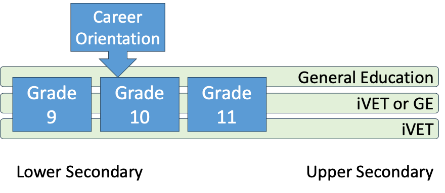
Wyss, A., Weich, M., & Nägele, C. (2025). Stimulating career planning reflection in students’ works through an online intervention. In C. Nägele, B. E. Stalder, F. Kaiser, M. Malloch, & N. Kersh (Eds.), Trends in vocational education and training research (Vol. 8, pp. 308–314). OAPublishing/VETNET.
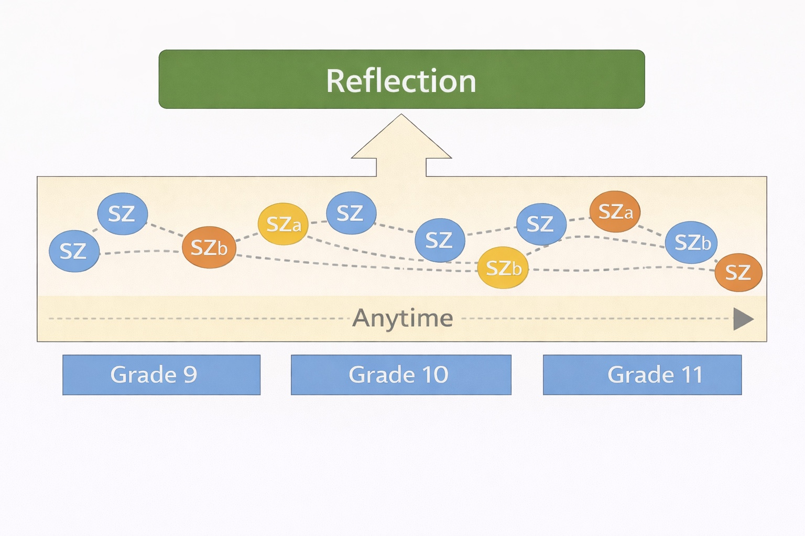
Nägele, C., Stalder, B. E., & Wyss, A. (2025). Die Berufswahl ist kein linearer Prozess. Transfer. Berufsbildung in Forschung und Praxis, 10(13). https://transfer.vet/die-berufswahl-ist-kein-linearer-prozess/
Lernen in der Wirtschafts- oder Fachmittelschule
Beschreiben Sie, wie Sie sich das Lernen in der WMS/FMS vorstellen.
Lernen in der beruflichen Grundbildung
Beschreiben Sie, wie Sie sich das Lernen in der beruflichen Grundbildung vorstellen.
Nägele, C., Hell, B., Rodcharoen, P., Armoneit, C., & BKSD, K. B. (2017). Informationssetting Kanton Basel-Landschaft. Details der Aufgaben 1 bis 9 [Information setting Canton Basel-Landschaft]. Bildungs-, Kultur- und Sportdirektion (BKSD) Kanton Basel-Landschaft, Fachhochschule Nordwestschweiz, Pädagogische Hochschule und Fachhochschule Nordwestschweiz sowie Hochschule für Angewandte Psychologie.
| Schule | Inhalt | Beispiel |
| Theorie | Lernen ist theorieorientiert, wissensbasiert oder prüfungsbezogen. | Ich mache Lernkarten nach jeder Lektion, um den Stoff besser zu behalten. |
| Selbstorganisiert | Selbständiges, eigenverantwortliches oder selbstorganisiertes Lernen. | Man muss sich selber motivieren und planen, was man lernt. |
| Lehre | ||
| Praktisch | Lernen durch Handeln, Anwenden und Ausprobieren im realen Umfeld. | Ich lerne, indem ich die Arbeit direkt mache und übe. |
| Angeleitet | Lernen unter Anleitung oder Aufsicht einer Fachperson. | Am Anfang zeigt der Chef, wie es geht, später macht man es allein. |
Die Berufs-, Studien- und Laufbahnberatung (BSLB) ist heute ein Service Public für die gesamte Bevölkerung.
Menschen wählen Berufe, die zu ihren Fähigkeiten und Interessen passen.
Beispiele
Ziel
→ optimale Passung zwischen Person und Arbeitsumwelt
Parsons, F. (1909). Choosing a vocation. Houghton Mifflin Company. Tarnai, C., & Hartmann, F. G. (2015). Berufliche Interessen. Beiträge zur Theorie von J. L. Holland. Waxmann.
Parsons, F. (1909). Choosing a vocation. Houghton Mifflin Company.
Sechs Interessentypen
Grundidee
Menschen suchen Arbeitsumwelten, die ihren Interessen entsprechen.
Eder, F. T., & Bergmann, C. (2015). Das Person-Umwelt-Modell von J. L. Holland: Grundlagen—Konzepte—Anwendungen. In C. Tarnai & F. G. Hartmann (Eds), Berufliche Interessen. Beiträge zur Theorie von J. L. Holland (pp. 11–43). Waxmann. Holland, J. L. (1959). A theory of vocational choice. Journal of Counseling Psychology, 6(1), 35–45.
Checks und Anforderungsprofile
Eine Einordnung: Rüfenacht, K. (2020). Anforderungsprofile.ch: Schulische Instrumente für die Berufswahl und -vorbereitung (p. 27) [Anforderungs-profile.ch: School tools for career choice and preparation]. Generalsekretariat EDK, Koordinationsbereich II «Berufsbildung und Sekundarstufe II / Allgemeinbildung».
→ Neuere Modelle verstehen Laufbahn als Entwicklungsprozess.
Berufswahl ist ein lebenslanger Entwicklungsprozess.
Phasen
Zentrale Idee
Das berufliche Selbstkonzept entwickelt sich über die Zeit.
Super, D. E. (1994). Der Lebenszeit-, Lebensraumansatz der Laufbahnentwicklung. In D. Brown & L. Brooks (Eds.), Karriere Entwicklung (pp. 211–280). J.G. Cotta’sche Buchhandlung Nachfolger GmbH.
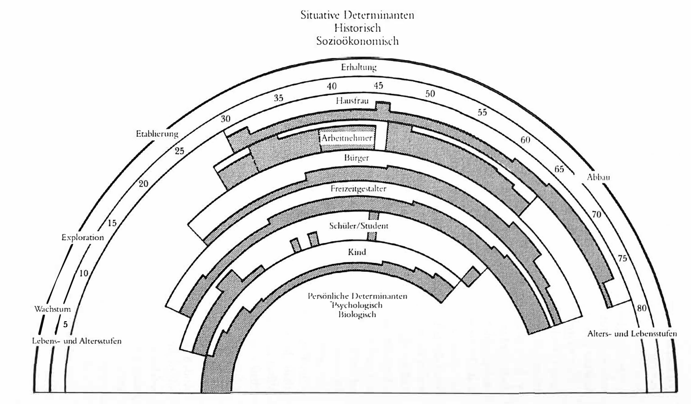
Super, D. E. (1994). Der Lebenszeit-, Lebensraumansatz der Laufbahnentwicklung. In D. Brown & L. Brooks (Eds.), Karriere Entwicklung (pp. 211–280). J.G. Cotta’sche Buchhandlung Nachfolger GmbH.
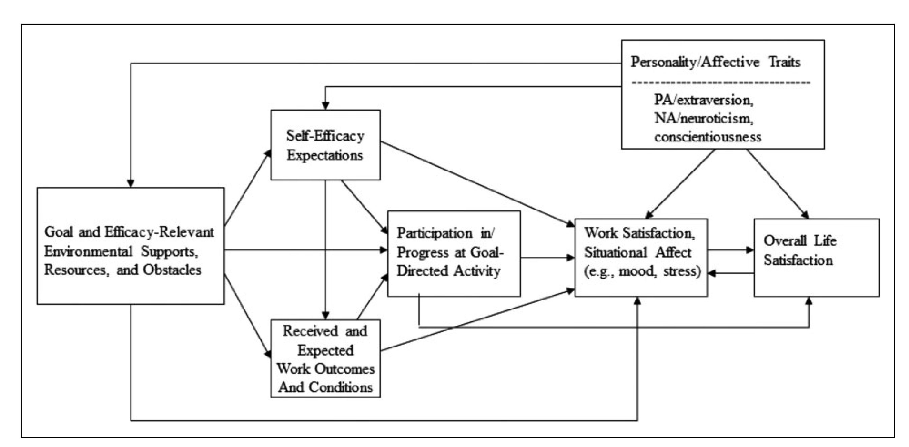
Lent, R. W., & Brown, S. D. (2019). Social cognitive career theory at 25: Empirical status of the interest, choice, and performance models. Journal of Vocational Behavior, 115(4), 103316. https://doi.org/10.1177/1069072719852736
Laufbahnen werden aktiv konstruiert.
Wichtige Konzepte
Leitfrage
Wie gestalten Menschen ihre Laufbahn in unsicheren Kontexten?
Savickas, M. L., Nota, L., Rossier, J., Dauwalder, J.-P., Duarte, M. E., Guichard, J., Soresi, S., Van Esbroeck, R., & van Vianen, A. E. M. (2009). Life designing: A paradigm for career construction in the 21st century. Journal of Vocational Behavior, 75(3), 239–250. https://doi.org/10.1016/j.jvb.2009.04.004
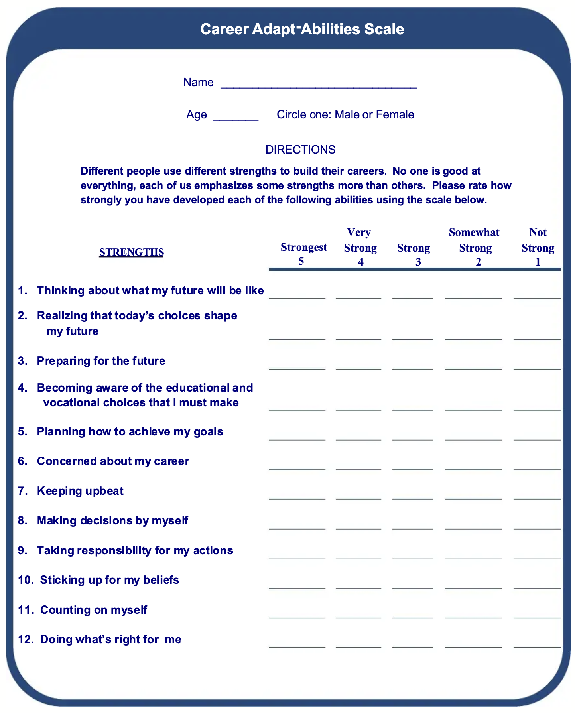
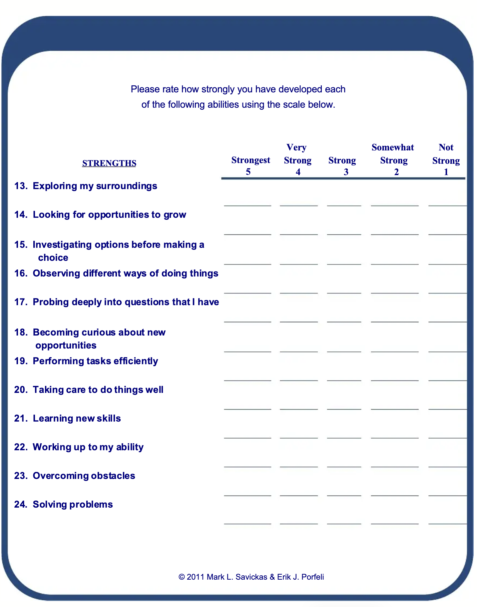
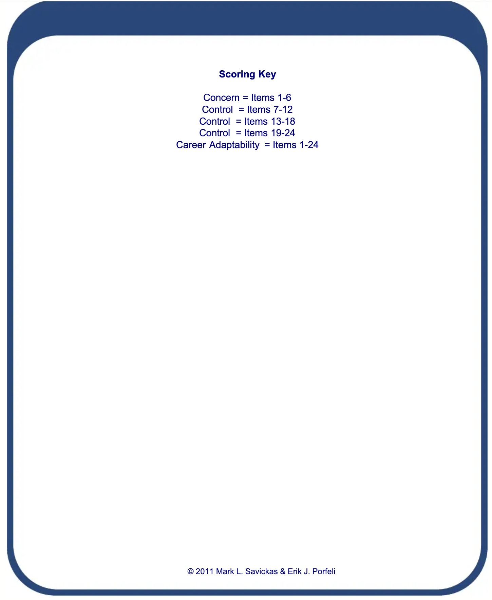
| Dimension | Deutsch | Items | Pädagogische Implikation |
|---|---|---|---|
| Concern | Zukunftsorientierung | 1–6 | Zukunftsgespräche, Reflexionsaufgaben |
| Control | Selbststeuerung | 7–12 | Entscheidungsübungen, Portfolioarbeit |
| Curiosity | Exploration | 13–18 | Praktika, Berufserkundungen |
| Confidence | Zuversicht | 19–24 | Feedback, Erfolgserlebnisse |
Savickas, M. L., Nota, L., Rossier, J., Dauwalder, J.-P., Duarte, M. E., Guichard, J., Soresi, S., Van Esbroeck, R., & van Vianen, A. E. M. (2009). Life designing: A paradigm for career construction in the 21st century. Journal of Vocational Behavior, 75(3), 239–250. https://doi.org/10.1016/j.jvb.2009.04.004
Beispiele
Krumboltz, J. D. (2009). The happenstance learning theory. Journal of Career Assessment, 17(2), 135–154. https://doi.org/10.1177/1069072708328861
Wichtige Kompetenzen
→ Ziel: Laufbahnen selbst steuern können.
Berufsorientierung als Teil von Bildung
Elemente
→ Verbindung von Schule, Arbeitswelt und Beratung
Krumboltz, J. D. (2009). The happenstance learning theory. Journal of Career Assessment, 17(2), 135–154. https://doi.org/10.1177/1069072708328861
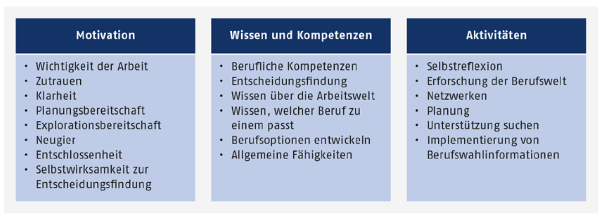
Marciniak, J., Steiner, R., & Hirschi, A. (2019). Berufswahlbereitschaft bei Jugendlichen – Welche Faktoren sind für eine erfolgreiche Berufswahl wichtig. BWP, 1, 6–9.
Zentrale Perspektiven
Wyss, A., Weich, M., & Nägele, C. (2025). Stimulating career planning reflection in students’ works through an online intervention. In C. Nägele, B. E. Stalder, F. Kaiser, M. Malloch, & N. Kersh (Eds.), Trends in vocational education and training research (Vol. 8, pp. 308–314). OAPublishing/VETNET. https://doi.org/10.21240/vetcon/2025/ecer/49
Social Cognitive Career Theory
Wichtige Einflussfaktoren
Zusätzlich
→ Berufliche Entscheidungen entstehen im Zusammenspiel von Person und Kontext.
Lent, R. W., & Brown, S. D. (2019). Social cognitive career theory at 25: Empirical status of the interest, choice, and performance models. Journal of Vocational Behavior, 115(4), 103316. https://doi.org/10.1177/1069072719852736